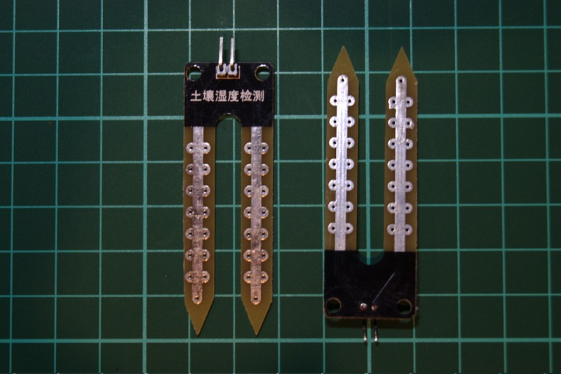
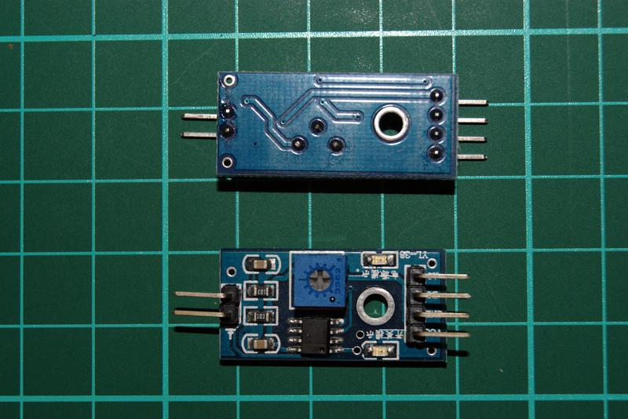
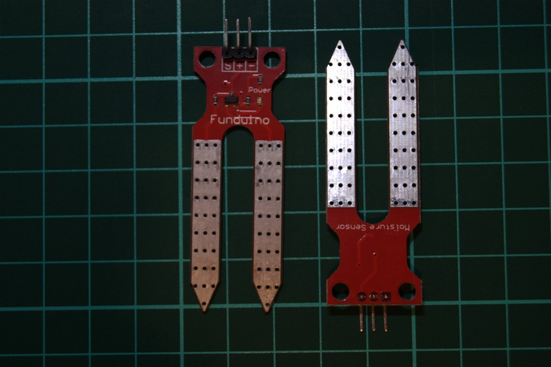
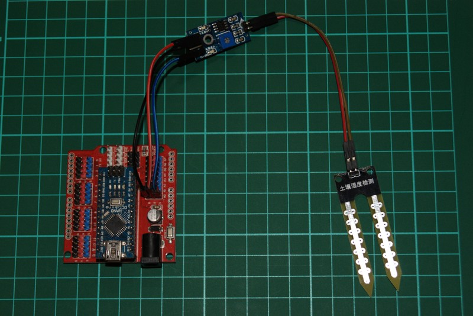
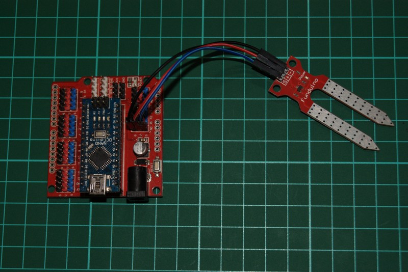

Introduction
Soil moisture sensors can be used to determine approximately how much moisture is in soil, based on how much electricity the soil conducts.
While these resistive soil moisture sensors are not perfect, they can still be useful.
This post presumes you’re familiar with the basics of uploading a sketch to an arduino and viewing the output via serial monitor.
Resources
Sensor Modules
Multiple types of soil moisture sensor are available:
Two Pin

A two pin soil moisture sensor needs to be connected via an adapter module:

Three Pin

Wiring
| Color | Arduino | 2 Pin Sensor | 3 Pin Sensor |
|---|---|---|---|
| blue | A0 | A0 | S |
| red | V (5v) | VCC | + |
| green | G (GND) | GND | - |


Note: The two pin soil moisture sensor has no polarity. It can be connected to the adapter module either way. The three pin connections however must be wired as indicated.
Test the Sensor
1) Open the AnalogReadSerial example sketch
(File -> Examples -> Basic -> AnalogReadSerial in Arduino IDE)
|
|
2) Upload the sketch to your arduino
3) Open up the serial monitor and ensure the baud rate is 9600. Depending on which sensor you’re using it might show something like this:
Two Pin Sensor (dry)
|
|
Three Pin Sensor (dry)
|
|
4) Put the soil moisture sensor into a glass of water and it should change to something like this:
Two Pin Sensor (wet)
|
|
Three Pin Sensor (wet)
|
|
The numbers will vary depending on the sensor and various other factors.
It doesn’t matter what the numbers are as long as there is a significant difference between dry readings and submerged readings.
Use software calibration to turn these raw values into something more user friendly.